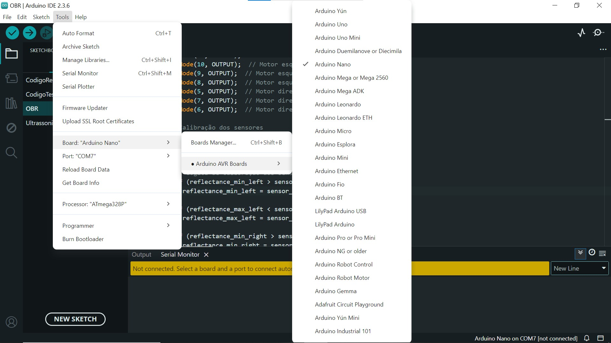
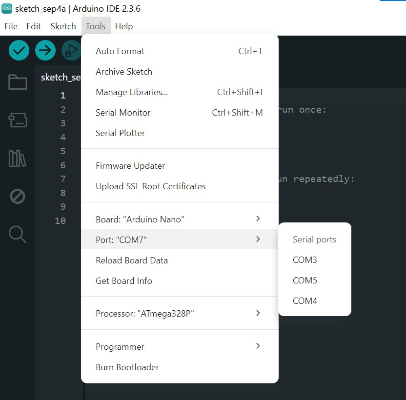
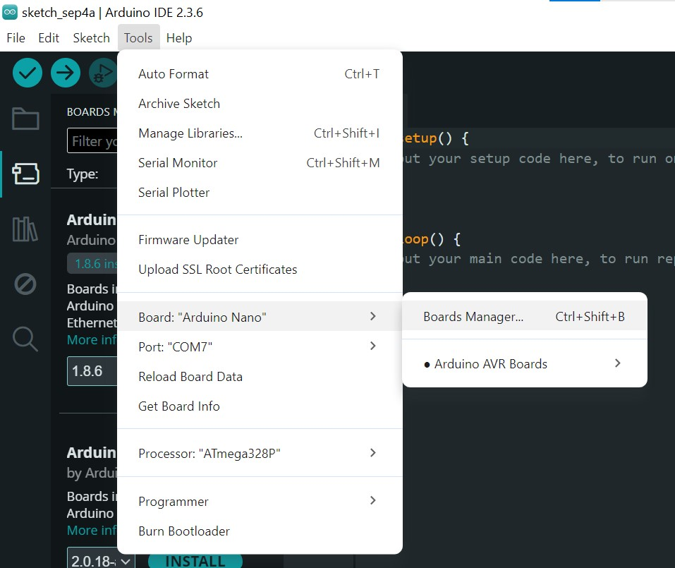
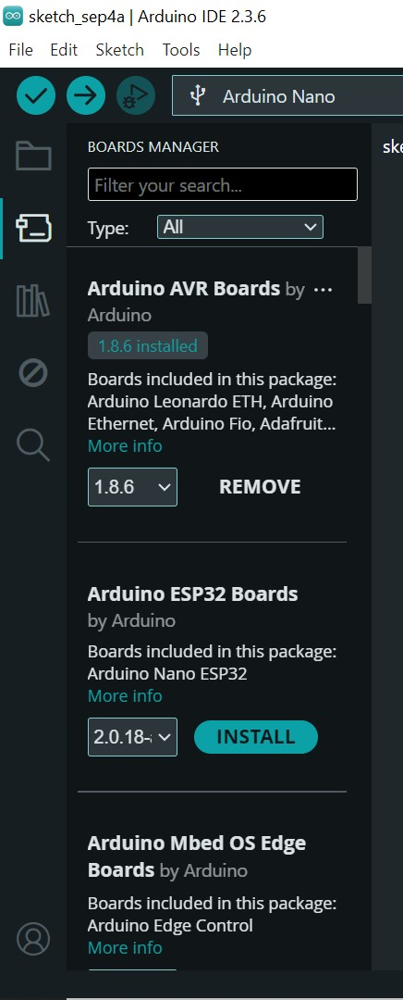

Arduino
O que é esse guia?
Um manual rápido para trabalho com placas Arduino, além de instalação e configurações do Arduino IDE.
Instalação do Arduino IDE
Arduino IDE (Ambiente de Desenvolvimento Integrado - IDE) é um software onde é possível desenvolver e compilar códigos em C/C++, e também enviar esse código para o microcontrolador, onde o mesmo funcionará de forma independente, mesmo se desconectado do computador. Para o download da IDE que permite a programação de placas Arduino acesse aqui. A instalação segue os moldes padrões de qualquer instalador convencional.
Configurações
Após instalar com sucesso a IDE, será necessário conectar o microcontrolador ao computador por meio de uma porta USB. Você precisará selecionar qual o modelo de arduino está sendo utilizado (ex: Arduino UNO, Arduino NANO), conforme apresentado na imagem que segue.

Em seguida, será necessário indicar à IDE qual porta está sendo utilizada pelo seu Arduino. Para isto basta ir novamente ao menu ferramentas, mas dessa vez selecionando a opção "Port". Você verá uma lista de portas disponíveis. Geralmente, a porta correta será identificada com o nome da placa ao lado (ex: "COM3 (Arduino Uno)").
Se houver dúvidas, desconecte a placa, verifique quais portas sumiram da lista e conecte-a novamente para confirmar. Alternativamente, consulte a porta que está sendo utilizada pelo seu Arduino no Gerenciador de Tarefas do Windows.

Instalação de Drivers
Embora a instalação do Arduino IDE em sistemas operacionais modernos inclua os drivers necessários para placas originais, placas "clones" ou similares podem exigir a instalação manual de um driver específico, para que a porta de comunicação seja reconhecida.
Para isso verifique o chip próximo à porta USB da sua placa. Procure por nomes como "CH340G" ou "FT232RL". Em seguida, baixe e instale o driver correspondente para o seu sistema operacional. As duas imagens a seguir ilustram este procedimento.
| Ferramenta Board Manager | Instalação de drivers |
|---|---|
|  |  |
Exemplos de Aplicação
Existem diversos tipos de placas Arduino no mercado, e cada uma apresenta diferenças em suas portas de entrada e saída, aqui temos alguns códigos com comandos simples e genéricos que poderâo auxiliar no entendimento da placa.
Geração de Sinais - Acendendo um led com botão.
const int pinoBotao = 2;
const int pinoLed = 13;
int estadoBotao = 0;
void setup() {
pinMode(pinoLed, OUTPUT);
pinMode(pinoBotao, INPUT);
}
void loop() {
estadoBotao = digitalRead(pinoBotao);
if (estadoBotao == HIGH) {
digitalWrite(pinoLed, HIGH);
} else {
digitalWrite(pinoLed, LOW);
}
}
Aquisição de Sinais - Lendo o valor de um potênciometro.
const int pinoPotenciometro = A0;
int valorLido = 0;
void setup() {
Serial.begin(9600);
}
void loop() {
valorLido = analogRead(pinoPotenciometro);
Serial.print("Valor lido do potenciômetro: ");
Serial.println(valorLido);
delay(500);
}
Ambientes de Simulação
No nosso laboratório de pesquisa, há várias unidades de Arduino disponíveis para uso em atividades de pesquisa. Entretanto, caso você se sinta inseguro, há diversas ferramentas que permitem a simulação, antes de ir para a parte prática. Dentre os diversos ambientes de simulação o TinkerCAD se mostra como uma importante ferramenta nesta áreia.
Para acessar e utilizar basta acesar o link acima e após isso se cadastrar no site, há uma aba Aprenda com diversos tutoriais nos mostrando como simular os circuitos mais básicos e as funcionalidades do site.